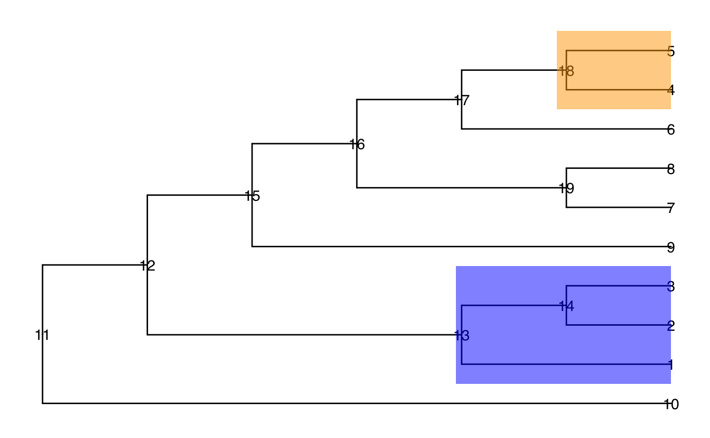

getCand.RdgetCand search candidates under different thresholds
getCand( tree, t = NULL, score_data, node_column, p_column, sign_column, threshold = 0.05, message = FALSE )
| tree | A phylo object. |
|---|---|
| t | A sequence of values with the range between 0 and 1. Thresholds used
to search candidates. The default is to use a sequence |
| score_data | A data frame includes at least one column about the nodes,
one column about the p value ( |
| node_column | The name of the column that gives the node information. |
| p_column | The name of the column that gives p values of nodes. |
| sign_column | The name of the column that gives the direction of the difference. |
| threshold | Default is 0.05. A value to hinder an internal to be picked due to randomness. |
| message | A logical value, TRUE or FALSE. Default is FALSE. If TRUE, the message about running process is printed out. |
A list includes candidate_list and score_data.
A list of candidates under different thresholds.
a data frame that includes columns from the input
score_data and additional columns to store score U and s under
different thresholds.
Ruizhu Huang
library(TreeSummarizedExperiment) library(ggtree) data(tinyTree) ggtree(tinyTree, branch.length = "none") + geom_text2(aes(label = node)) + geom_hilight(node = 13, fill = "blue", alpha = 0.5) + geom_hilight(node = 18, fill = "orange", alpha = 0.5)set.seed(2) pv <- runif(19, 0, 1) pv[c(1:5, 13, 14, 18)] <- runif(8, 0, 0.001) fc <- sample(c(-1, 1), 19, replace = TRUE) fc[c(1:3, 13, 14)] <- 1 fc[c(4, 5, 18)] <- -1 df <- data.frame(node = 1:19, pvalue = pv, foldChange = fc) ll <- getCand(tree = tinyTree, score_data = df, node_column = "node", p_column = "pvalue", sign_column = "foldChange")